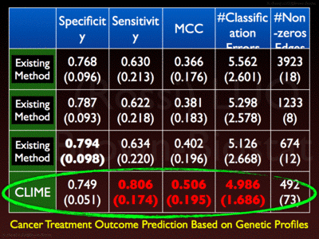
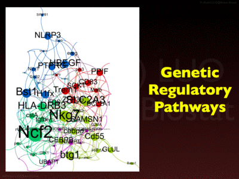
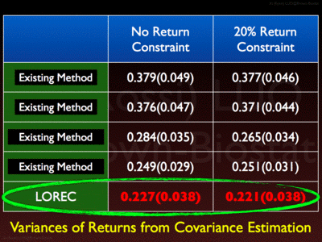

<!-- Page Heading/Breadcrumbs -->
<div class="row">
    <div class="col-lg-12">
        <h1 class="page-header">Big Data Analytics
        </h1>
        <ol class="breadcrumb">
            <li><a href="{{url_base}}/index.html">Home</a>
            </li>
             <li><a href="{{url_base}}/research.html">Research</a>
            </li>
            <li class="active">Dimensional Inference</li>
        </ol>
    </div>
</div>
<!-- /.row -->

<!-- Portfolio Item Row -->
<div class="row">

    <div class="col-md-8">
        <div id="carousel-example-research" class="carousel slide" data-ride="carousel" style="width: 400px; margin: 0 auto">
            <!-- Indicators -->
            <ol class="carousel-indicators">
                <li data-target="#carousel-example-research" data-slide-to="0" class="active"></li>
                <li data-target="#carousel-example-research" data-slide-to="1"></li>
                <li data-target="#carousel-example-research" data-slide-to="2"></li>
                <li data-target="#carousel-example-research" data-slide-to="3"></li>
                <li data-target="#carousel-example-research" data-slide-to="4"></li>
                <li data-target="#carousel-example-research" data-slide-to="5"></li>
                <li data-target="#carousel-example-research" data-slide-to="6"></li>
            </ol>

            <!-- Wrapper for slides -->
            <div class="carousel-inner">
                <div class="item active">
                    
                </div>
                <div class="item">
                    
                </div>
                <div class="item">
                    
                </div>
                <div class="item">
                    
                </divimg
                <div class="item">
                    
                </div>
                <div class="item">
                    
                </div>
            </div>

            <!-- Controls -->
            <a class="left carousel-control" href="#carousel-example-generic" data-slide="prev">
                <span class="glyphicon glyphicon-chevron-left"></span>
            </a>
            <a class="right carousel-control" href="#carousel-example-generic" data-slide="next">
                <span class="glyphicon glyphicon-chevron-right"></span>
            </a>
        </div>
    </div>
<!--Short description-->
    <div class="col-md-4">
        <h2>Network Inference</h2>
        <ul>
            <li>Estimate networks from big data (e.g. fMRI or genetics)</li>
            <li>Graphical models for causal mechanisms</li>
            <li>Network medicine and prediction</li>
        </ul>

       <h2>Example Methods</h2>
       <ul>
           <li>CLIME</li>
           <li>SCIO</li>
           <li>LOREC</li>
       </ul>
    </div>
</div>
<!-- /.row -->
